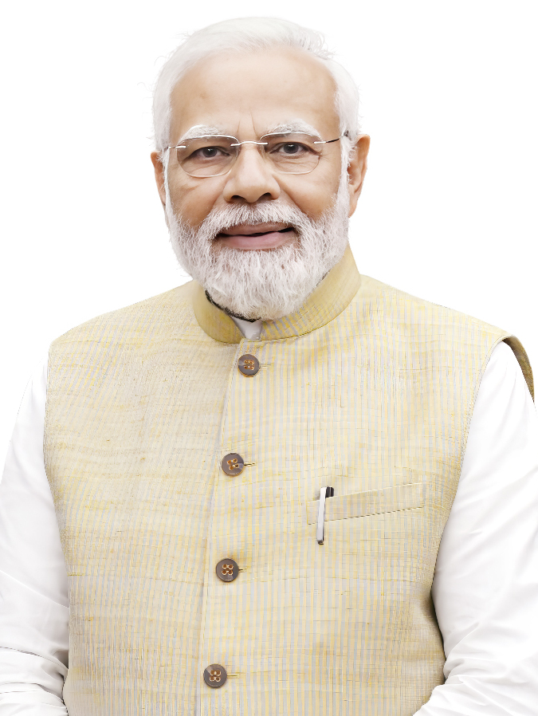
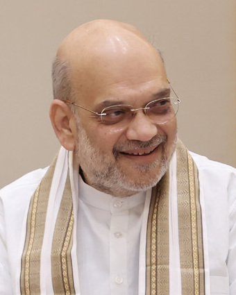
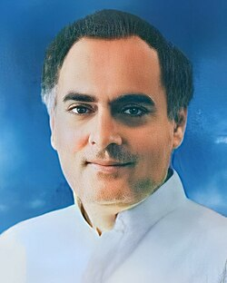
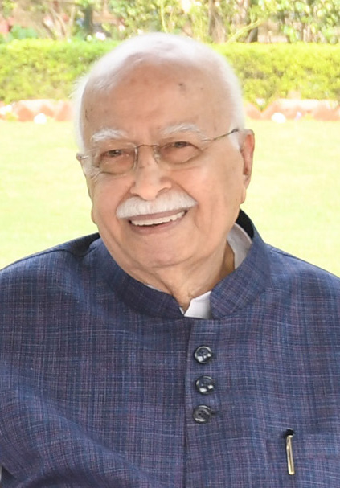
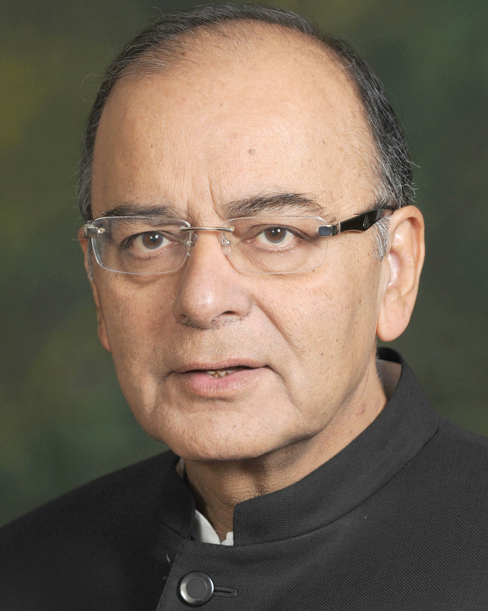
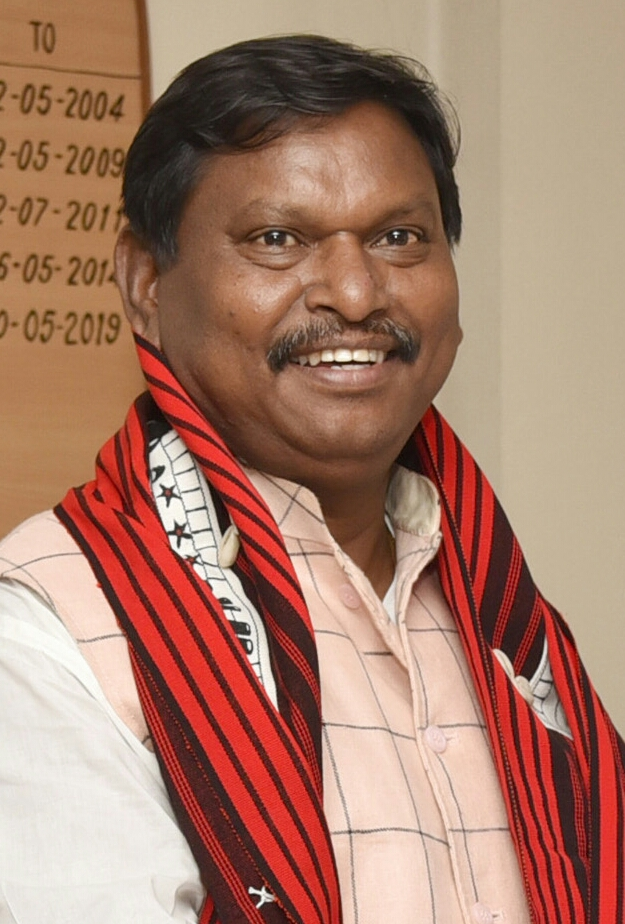

Legacy
Welcome to my Legacy — a living archive of the people who’ve shaped my life. From cherished friends to family legacy, this page is a curated reflection of my personal journey. Whether it’s the Hall of Fame of friendships, the Watch List of future allies, or a documented account of my family’s sociopolitical intersections — it’s all here.
Family Legacy

I come from a line of thinkers, reformers, and political activists. One key figure in my legacy is my grandfather, Dr. Gopesh Chandra Sarkar, whose life spanned academia, politics, and ideological work.

My paternal grandfather Dr. Gopesh Chandra Sarkar was:
- Ex-Reader at University College, North Bengal University
- BJP Lok Sabha candidate for the Raiganj Constituency during the 2009 Indian General Elections
- Former National Council Member of the BJP
- Former State Vice-President of the Bharatiya Janata Party (BJP) in West Bengal
- Former State Vice-President of the Jatiyatabadi Adhyapak O Gabeshak Sangha (ABRSM) in West Bengal
- Former Sanghachalak (President) of the Rashtriya Swayamsevak Sangh (RSS) in West Dinajpur District
- Former Sanghachalak (President) of the Rashtriya Swayamsevak Sangh (RSS) in Uttar Dinajpur District
- Former President of the Arya Sangha, founded by Swami Samadhi Prakash Aranya Maharaj
- Suffered Imprisonment in 1992, as the prime accused during the Ram Mandir Movement at Ayodhya in Uttar Dinajpur District, on false allegations of the leftist government in West Bengal.
Meanwhile, my maternal grandfather, Chandan Kumar Das, a dedicated RSS worker, fearlessly stood up against the Congress regime during the dark days of the Emergency in the 1970s. For daring to speak out against authoritarianism and defend democratic values, he was imprisoned—a mark of both his conviction and courage.
Political Intersections: Conversations Across the Spectrum
Through his work, my grandfather had interactions and dialogues — some brief, some recurring — with a wide range of Indian political and cultural figures. These meetings weren’t endorsements or deep friendships, but real moments of political intersection in India's recent history.
Connections with Politicians
The concept of "six degrees of separation" - the idea that any two people on Earth are six or fewer connections apart - finds real-world validation in my family's political journey. Through meaningful associations and public service, our lineage stands just two degrees removed from the highest office in India, exemplifying how proximity to leadership often grows from a legacy of commitment, ideology, and civic engagement.| Photo | Name | Known For | Connection |
|---|---|---|---|
|  | Narendra Modi | Prime Minister of India since 2014 | Second-degree connection via Shri Amit Shah, who shared the stage with my grandfather, Dr. Gopesh Chandra Sarkar, during election campaigning. Amit Shah is Modi’s closest political ally and strategist. This indirect link places our family two steps removed from the Prime Minister. |
 |
Droupadi Murmu | President of India since 2022 | My grandmother, Smt. Khela Sarkar shared a significant association with Smt. Sunita Haldekar, the All India Sampark Pramukh, who had the honor of meeting Droupadi Murmu, the current President of India. This connection places our family two steps removed from the President, underscoring our longstanding involvement in India’s political and social fabric. |
|  | Amit Shah | India's Union Home Minister and Minister of Cooperation in the Narendra Modi-led government | My grandfather, Dr. Gopesh Chandra Sarkar was on the stage with Amit Shah during his election campaigning as a VIP chief guest due to his position as the former BJP State Vice President. |
|  | Rajiv Gandhi | Prime minister of India from 1984 to 1989 | Eminent Congress leader Shri Shankar Chakraborty classmate and cordial friend of Dr.G.C.Sarkar, had regular meetups and connections with Rajiv Gandhi, the then prime minister of India. |
|  | L.K Advani | Deputy Prime Minister of India from 2002 to 2004 | Dr. Gopesh Chandra Sarkar, the BJP State Vice-President of West Bengal, went to receive L.K Advani at the Balurghat helipad, he had several meets and interactions with him including briefing him on the local issues of the state. |
|  | Arun Jaitley | Attorney and former Minister of Law and Justice of India | Dr. Gopesh Chandra Sarkar, the BJP State Vice-President of West Bengal, went to receive Arun Jaitley at the Balurghat helipad, he had several meets and interactions with him including briefing him on the local issues of the state. |
|  | Arjun Munda | Former Chief Minister of the Indian state of Jharkhand and the former Minister of Tribal Affairs and Minister of Agriculture and Farmers' Welfare in the Second Modi ministry. | Dr. Gopesh Chandra Sarkar, the BJP State Vice-President of West Bengal, went to receive Arjun Munda at the Balurghat helipad, he had several meets and interactions with him including briefing him on the local issues of the state. |
Fun Fact: During a train journey, my parents happened to cross paths with Smt. Venkatramaiah Shantha Kumari ("Shanthakka"), the current Pramukh Sanchalika (Chief) of the Rashtra Sevika Samiti, a prominent Hindu nationalist women’s organization. Initially, she didn’t recognize them - until they mentioned my grandmother, Smt. Khela (Jaya) Sarkar. Her eyes immediately lit up with recognition, and from that moment, the conversation flowed. Not only was a personal connection rekindled, but they were also extended hospitality and warmth through food and community service during the journey. It was a powerful reminder of how legacy builds unexpected bridges, even on a moving train.
How My Family Helped Revoke Congress Tyranny: A Generational Revolt
In the pages of Indian history — where ideology wrestled with authoritarianism and courage clashed with control — my family stood not as silent spectators, but as fire-breathers of resistance. Ours isn’t a legacy of political privilege. It’s a legacy of protest, of sacrifice, of unapologetic revolt against the Indian National Congress’s long-standing monopoly on power.
What the Congress feared most wasn’t a foreign invader or a student protest — it was a politically awakened Indian with conviction. My family gave them more than one.
1975: When Democracy Was Gagged
The Emergency. That 21-month blackout when Indira Gandhi turned the Constitution into a doormat and democracy into a myth. Leaders like L.K. Advani, Atal Bihari Vajpayee, George Fernandes, and Jayaprakash Narayan were dragged into jails for daring to speak. Among them stood a quieter name, less remembered but no less important: Chandan Kumar Das, my maternal grandfather.
A proud karyakarta of the RSS, he was arrested — not for violence, not for conspiracy, but for dissent. For raising his voice against a regime that feared truth more than treason. His jail cell became his medal — a reminder that even a grassroots activist from Bengal could make the Congress shiver.
1992: When Ram Mandir Lit a Fire
Fast forward to the flashpoint of Ayodhya. While the Ram Janmabhoomi Movement stirred hearts across India, Dr. Gopesh Chandra Sarkar, my paternal grandfather, wasn’t reading the headlines — he was one.
A scholar. A BJP Vice-President. A nationalist to the core. He was arrested by West Bengal’s communist regime during the height of the movement — framed as the prime accused in a cooked-up case designed to snuff out saffron resurgence in Uttar Dinajpur.
His real “crime”? His voice was too sharp, too influential, too dharmic for the Left to ignore. But the move backfired spectacularly. His arrest didn’t weaken the movement — it supercharged it. Shakhas grew. Support solidified. He became a symbol of spiritual and political resistance in a state choking under red tape and red flags.
This Wasn’t Just Resistance — It Was Revolution
This isn’t nostalgic glorification — it’s lived truth. From welcoming Advani and Arun Jaitley at Bengal helipads to coordinating rallies with Amit Shah, my family didn’t watch India’s political reawakening from the sidelines — we were in the engine room.
We weren’t party loyalists. We were ideological soldiers.
This wasn’t about seats or selfies. It was about sangathan, sanskar, and sangharsh. It was about reclaiming Bharat’s dharmic soul from the clutches of dynastic entitlement and bureaucratic rot.
A Legacy of Defiance, Not Dynasty
While the Gandhi family passed down power like family silver, my grandparents passed down principle. Our political legacy wasn’t inherited — it was earned. With jail time. With public defamation. With relentless organizing and uncompromising ideals.
So when people say “India is changing,” I smile and say: We’ve been changing it for decades.
When they ask, “Who dared push back against Congress tyranny?” I say: My family did — with their backs straight, their fists raised, and their eyes on the Constitution.
And when they ask, “Why does it matter today?” I show them the mugshots, the headlines, the memories. And I say: Because freedom is earned. Not inherited. Not granted. And never free.
Hall of Fame and Honor - Honoring and Cherishing Great People
🏆 Great Friendships
The friends on this list are not just acquaintances, but true, honored friends who have made a real impact on my life. These are the ones who've shaped me, not just those I casually talked to.
Note: Names marked with a 🌟 are those who have had a profound impact on my life - individuals I deeply value and hold in the highest regard.| Friend Name | Year | |
|---|---|---|
| Prakriti | 2010-2015 | This is Prakriti, my childhood friend, she was 4 years older than me, and used to be my friend. We stopped talking because I moved from Hyderabad to Bengaluru |
| 🌟 Abhay V.Shirali | 2015-2018 | Abhay was my best friend back then in my apartment. He was a great friend. We played for hours daily. I still miss him. I have his contact details, but I wish we could reunite, be friends again, and restore the glory days of back then. |
| Pranav | 2017-2018 | Pranav was my best friend in 1st and 2nd grade in Sri Chaitanya Techno School Arehalli Branch. |
| A.K Hemanth | 2021-2022 | A.K Hemanth was my best friend in grade 5 and 6 in Orchids the International School Panathur Branch. |
| Ira Lahiri | 2022-2023 | One of my great friends from Orchids Online School which is the online hybrid branch of the Orchids the International School. |
| 🌟 Devanshi Yadav | 2022-2023 | A great friend of mine with a rather disputed identity. Really really good person, helped me a lot to grow in aspects I never thought I would be able to discover myself. |
| Siddharth Dande | 2023-2025 | Great guy school friend of mine in Narayana E-Techno and Olympiad School Borewell Road Whitefield Branch. |
| 🌟 Eesha Subudhi | 2024-2025 | Great female school friend of mine, most honorable, really really good best friend of mine in Narayana E-Techno and Olympiad School Borewell Road Whitefield Branch. |
| Srikar Goppallasetti | 2024-2025 | Srikar Goppallasetti was a cordial friend of mine I met at Narayana E-Techno and Olympiad School. He was the person I "yapped" to in the bus, and he'd listen! Truly one of a kind! |
👀 Watch List
The names in this list are names of people who I want to get close to and contact in the future. If you see this, and your name is on this, please contact me.| Friend Name | Year | |
|---|---|---|
| G.D Sahaana | 2020-2022 | G.D Sahaana was my arch-nemesis competitor in class 5, as some could say, similar to Devi and Ben in Never Have I Ever, except I was not attracted to her. We both worked on a lot of great projects. She has moved to UK, and there has been no way to reach out and contact her. |
| Ira Lahiri | 2023 | One of my great friends from Orchids Online School which is the online hybrid branch of the Orchids the International School. |